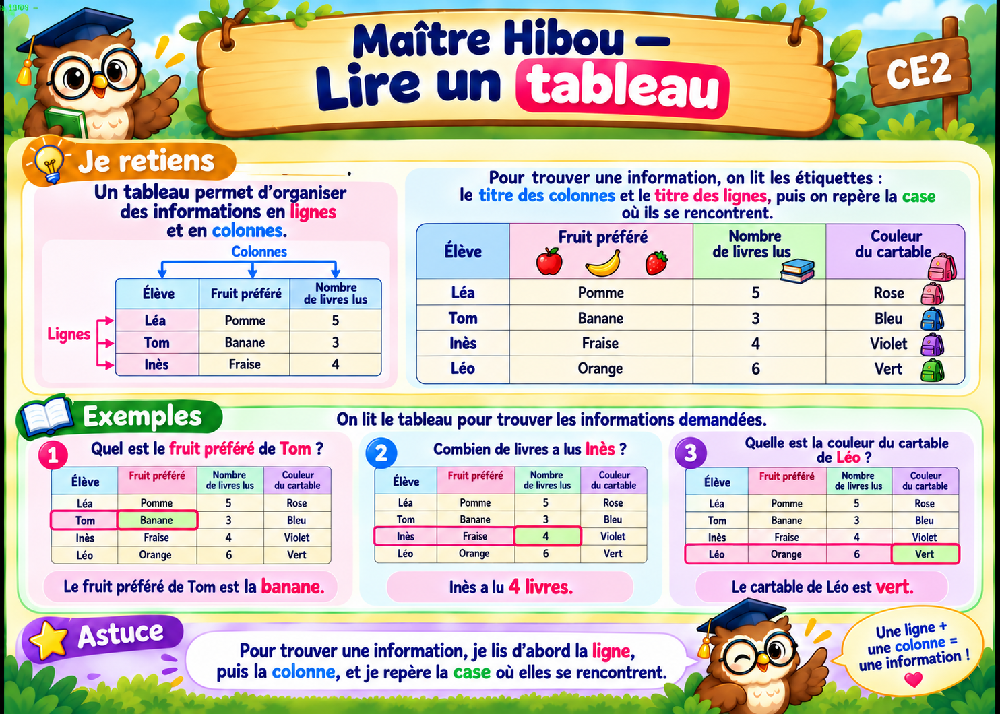

À toi de jouer !
Observe, réponds, puis vérifie. Tu passes à la suite quand tu as trouvé.
| Élève | Fruit préféré | Livres lus | Cartable |
|---|---|---|---|
| Léa | Pomme | 5 | Rose |
| Tom | Banane | 3 | Bleu |
| Inès | Fraise | 4 | Violet |
| Léo | Orange | 6 | Vert |
Bravo, les 10 exercices sont réussis !
Tu peux valider cette leçon.